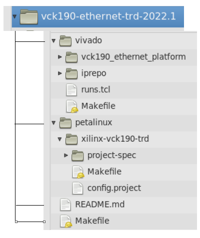

Versal Prime-VCK190 Evaluation Kit Tutorial |
Using Vivado to Build the Hardware Design |
TRD Package¶
Accessing the Tutorial Reference Files¶
Download the TRD package from Source Files .
Unzip the TRD package.
Navigate to the
../vck190-ethernet-trd-2022.1which is the working directory.
TRD package File Structure:¶
The TRP package file hierarchy is shown in the below snapshot.

The TRD package contains:
Makefilehas scripts to build the entire TRD package hardware and software platforms in a single run.README.mdREADME.md contains the documentation.vivadofolder contains files to create the vck190 ethernet hardware platform.petalinuxfolder contains files to build the petalinux images.
Build Flow¶
This tutorial shows how to build the TRD package.
Prerequisites¶
Vivado Design Suite 2022.1
PetaLinux 2022.1 tools
To Build the TRD Package with the top Makefile:¶
Running the ../vck190-ethernet-trd-2022.1/Makefile will generate the hardware platform XSA and subsequently the petalinux images.
Go to the working directory
cd vck190-ethernet-trd-2022.1
Run the following command to build and generate sdcard wic image. This Makefile calls lower level Makefiles to build hardware XSA and petalinux images. The XSA generation may take couple of hours depending on the system specification.
make sdcard YES=1
To Build the Hardware Platform XSA:¶
This tutorial shows how to build XSA alone using the makefiles
Generate XSA using
../vck190-ethernet-trd-2022.1/vivado/Makefile
Go to the platform directory specific to the application
cd vck190-ethernet-trd-2022.1/vivado/
To build the XSA, Source Vivado and run the following command. The Makefile uses scripts/main.tcl file to create a Vivado project, populate the block design and finally build a XSA. The XSA generation may take couple of hours depending on the system specification
make design_xsa
The generated XSA will be located at:
$working_dir/vivado/vck190_ethernet_platform/project/mrmac_subsys_wrapper.xsa
Generate XSA from top make file
../vck190-ethernet-trd-2022.1/Makefile:
Navigate to the
vck190-ethernet-trdwhich is the working directory
make vivado_design design=<Platform name> JOBS=<n>
Modifying the design and creating a new XSA¶
Note: The steps below are optional and are required only if you need to change the platform design.
Go to the directory specific to the platform design
cd $working_dir/vivado/vck190_ethernet_platform/
To open the Vivado project, first open the Vivado GUI, then run the following command from the Vivado tcl console:
open_project ./project/mrmac_subsys.xpr
In the Flow Navigator pane on the left-hand side under IP integrator, click on Open Block Design. An IP integrator block design becomes visible that contains the Processing System (PS) IP and other PL IPs.
In the Flow Navigator pane on the left-hand side under Program and Debug, click on Generate Device Image. The device image (pdi) for the design will be generated and available at
$working_dir/vivado/<platform_name>/projec/impl_1/mrmac_subsys_wrapper.pdi.To generate the XSA, select File → Export→ Export Hardware.
The Export Hardware dialog box opens.
Choose Include device image and click Next. Provide the name for the exported file as mrmac_subsys_wrapper and use the default location to save the file. Click Next. A warning message appears if a Hardware Module has already been exported. Click Yes to overwrite the existing XSA file, if the overwrite message is displayed. Click Finish.
To Build the Petalinux Images:¶
In the following sections, the steps to build petalinux images are given.
Configure the petalinux project manually¶
The project needs to be configured with the xsa file from the Vivado project.
petalinux-config --get-hw-description=<path of xsa> --silentconfig
Note: The xsa needs to match the platform and design selected in the previous step.
Build the Image¶
Run the below commands to build and package the wic image in compressed format:
petalinux-build
petalinux-package --wic --wic-extra-args "-c xz"
The generated compressed image file will be located at
images/linux/petalinux-sdimage.wic.xz.
Tip: The generated wic file assumes a fixed partition size. The file size can be significantly lower by compressing the file e.g. using xz:
To uncompress wic file use following command
xz -d -v images/linux/petalinux-sdimage.wic.xz
This generates a output file named
images/linux/petalinux-sdimage.wic with uncompressed wic file
Flash the image on an SD card using Balena Etcher. This image is functionally equivalent to the prebuilt sdcard image provided with package
Next Steps¶
License¶
Licensed under the Apache License, Version 2.0 (the “License”); you may not use this file except in compliance with the License.
You may obtain a copy of the License at http://www.apache.org/licenses/LICENSE-2.0
Unless required by applicable law or agreed to in writing, software distributed under the License is distributed on an “AS IS” BASIS, WITHOUT WARRANTIES OR CONDITIONS OF ANY KIND, either express or implied. See the License for the specific language governing permissions and limitations under the License.
Copyright© 2022 Xilinx